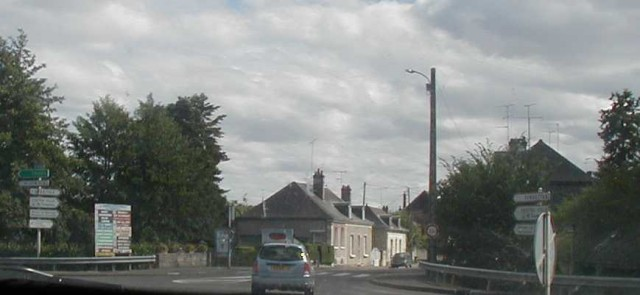
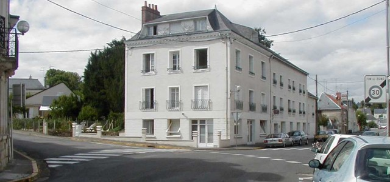
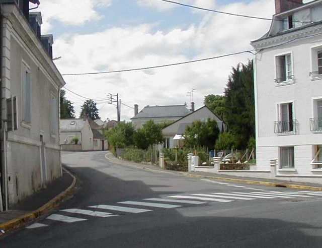
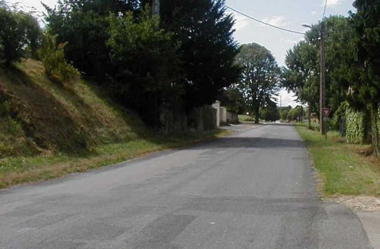

| Page 2 of 5 | Tours - La Membrolle |
|| Contents | RN158 | La Membrolle | RN159 | D48 | Semblançay || Home ||
Numbers on map indicate where the photos were taken. Click on
hyperlinks above.
Return to racingcircuits.net's Historic Circuits Photo Archive Main Index

06

07

08

09

10
Photographs ©Chris Hall. Reproduced here with kind permission.